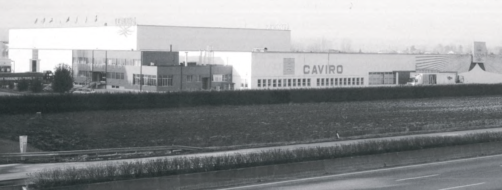
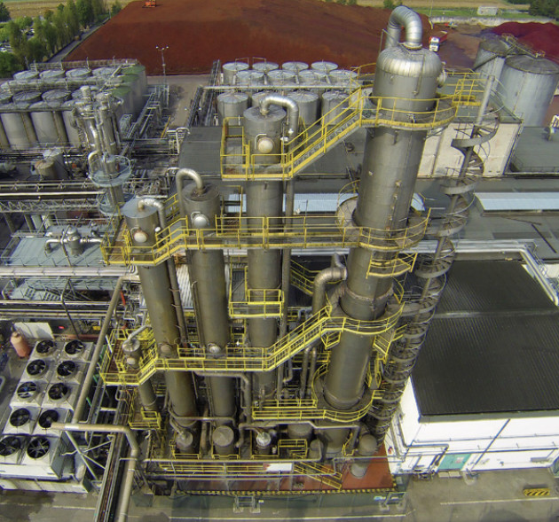
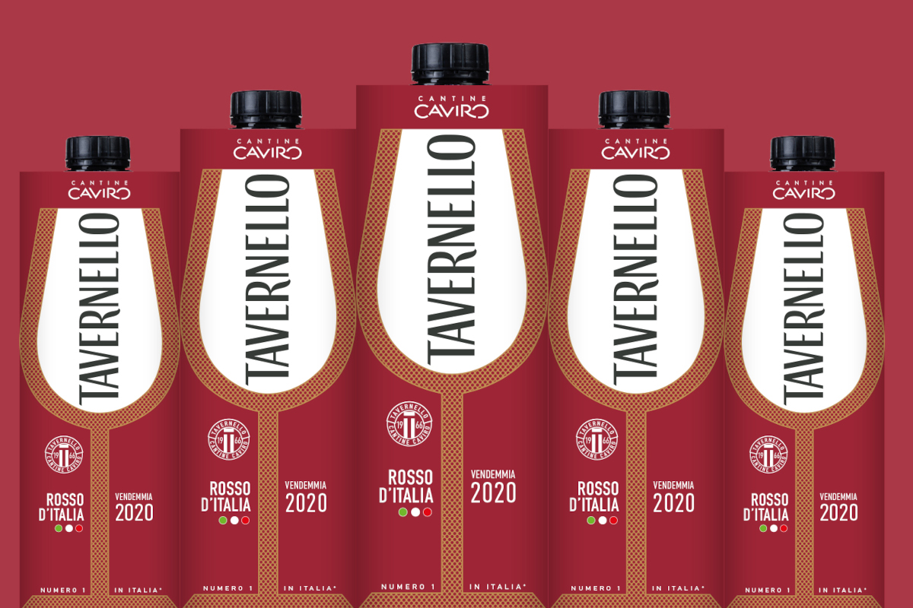
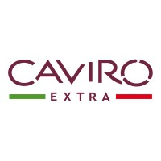

Introduzione
Caviro è una società consortile di successo, che in 60 anni di continua evoluzione è riuscita a preservare tutti i capisaldi della tradizione vitivinicola italiana.
È un vero e proprio sistema cooperativo, creata da agricoltori romagnoli che, fondendosi nel tempo, sono riusciti a costruire il futuro delle proprie attività.
Ad oggi, il vino lavorato e confezionato dal Gruppo è dato dal sacrificio e dal lavoro di oltre 12.000 viticoltori sparsi in varie regioni d'Italia, per un totale di circa 35.200 ettari di vigneto.
Questi numeri rendono Caviro una delle realtà vitivinicole più estese d'Italia, che ogni anno produce 660 mila tonnellate di uva.
Accanto alla produzione, l'impresa fonda le basi anche su ricerca e sostenibilità, dando rilevanza ai sottoprodotti della vinificazione e restituendo all'ambiente una prosperità che deriva dalla terra stessa.
Ma torniamo indietro...
Le origini del Gruppo
Questa realtà nasce nel Dopoguerra, precisamente nel 1966, un periodo dove il Bel Paese stava andando incontro al rinnovamento e modernizzazione.
Grazie alla Riforma Agraria del 1950, attraverso la Legge Stralcio (L.841/1950) e la Legge Sila (L.239/1950), molti lavoratori agricoli ebbero la possibilità di evolversi, passando da semplici braccianti a piccoli imprenditori.
Questa fase favorì la nascita e conseguente diffusione delle cooperative agricole.
Nove di queste (tra Forlì, Ravenna e Faenza) decisero di fondersi, creando così Caviro, che sta per Cooperative Associate Viticoltori Romagnoli.
Il motivo? Valorizzare in autonomia il vino prodotto con le uve dei soci, allora gestiti da mediatori commerciali privati.

La crescita industriale
In quei tempi, le cantine sociali avevano problemi con lo smaltimento dei sottoprodotti della filiera. Per oltrepassare quest'ostacolo operavano le distillerie, che avevano il ruolo di acquistare le vinacce residue al fine di estrarne alcol.
Nel 1969, a Faenza, i fondatori di Caviro realizzarono una grande distilleria di proprietà, per produrre alcol direttamente dagli scarti della loro produzione e, soprattutto, dall'eccesso del rigoglioso mercato ortofrutticolo presente ancora oggi in Emilia-Romagna.
Un anno prima, a Cesena, si era costituito Corovin (Consorzio Romagnolo Vini Tipici), un'impresa di imbottigliamento con 11 cantine socie, 7 delle quali già presenti in Caviro.
Insieme, si distinsero sin dall'inizio per la capacità di gestire enormi strutture dotate di tecnologie all'avanguardia per l'epoca. I grandi volumi di prodotto lavorato porsero solide basi per il futuro. Infatti, nel 1984, avvenne la fusione tra Caviro e Corovin, arrivando quindi al Gruppo Caviro.
Dagli anni '70 ad oggi, Caviro ha sempre migliorato e automatizzato i propri impianti: nel 1982 avvenirono diversi investimenti nel territorio di Faenza, dove nacquero l'impianto di digestione anaerobica, la caldaia a combustibile solido e i serbatoi per lo stoccaggio dell'alcol.
Dal 2012 il Gruppo Caviro ha dato una svolta ancora più importante riguardo la sostenibilità e la salvaguardia dell'ambiente: per citarne alcuni, inaugurò prima un impianto a gas Jenbacher (biogas) e, successivamente, la centrale di cogenerazione Enomondo (biomasse) in collaborazione con Herambiente. Ciò ha consentito una grande produzione di energia elettrica e termica rinnovabile, facendo raggiungere all'azienda un'autonomia energetica totale, cedendo anche il surplus alla rete nazionale.

Marchi e cooperative della filiera
Nel corso del tempo, il Gruppo Caviro ha allargato la propria presenza nel settore vitivinicolo grazie allo sviluppo di prodotti, divenuti poi marchi, riconosciuti sia a livello nazionale che internazionale e per mezzo di una filiera integrata che coinvolge moltissimi viticoltori sparsi per il territorio italiano.
Tra i numerosi marchi e realtà produttive che costituiscono il Gruppo, si riportano di seguito alcuni esempi che consentono la comprensione della dimensione e della molteplice varietà dell'offerta.
Principali marchi
- Tavernello - il più famoso vino da tavola, apprezzato soprattutto per l'imbattibile rapporto qualità-prezzo.
- Sangiovese Rubicone IGT - vino rosso di media struttura dotato di buona intensità e ottima armonia di sapori.
- Trebbiano Romagna DOC - vino bianco fresco e sapido. Da gustare con formaggi o con piatti della cucina marittima.

Cooperative e cantine associate
- Leonardo da Vinci - cantina toscana che segue le orme del genio Leonardo.
- Cesari - fondata nel 1936 in Veneto, è pioniera nel portare l'Amarone sui mercati internazionali.
Caviro Extra: il concetto di Economia Circolare
Nel cuore del Gruppo Caviro c’è una realtà che ha fatto dell'innovazione una vera e propria missione ecologica: si chiama Caviro Extra. Nata nel 2018 a Faenza, questa azienda ha preso un motto antico e lo ha trasformato in una sfida moderna: "Nulla viene sprecato, tutto si trasforma".Da allora, questo impegno è cresciuto anno dopo anno, fino a dare vita a uno dei modelli di economia circolare più avanzati e ammirati in Italia.Ma cosa succede, concretamente, nei loro stabilimenti? Ogni anno Caviro Extra accoglie e lavora circa 600 mila tonnellate di materiali che altrimenti andrebbero buttati: vinacce, fecce e residui di potatura che arrivano direttamente dalle campagne e dalle filiere agroalimentari del gruppo. Quelli che per molti sarebbero solo scarti da smaltire, qui diventano materie prime preziose, pronte per iniziare una nuova vita.I numeri parlano chiaro: il 99,3% di tutto ciò che entra in azienda viene recuperato e valorizzato. Solo lo 0,7% diventa un vero rifiuto. È la prova concreta che un futuro a impatto quasi zero non è solo un bell'ideale, ma un traguardo possibile e già reale.
